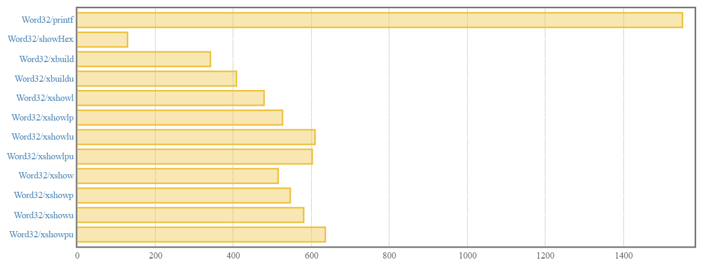
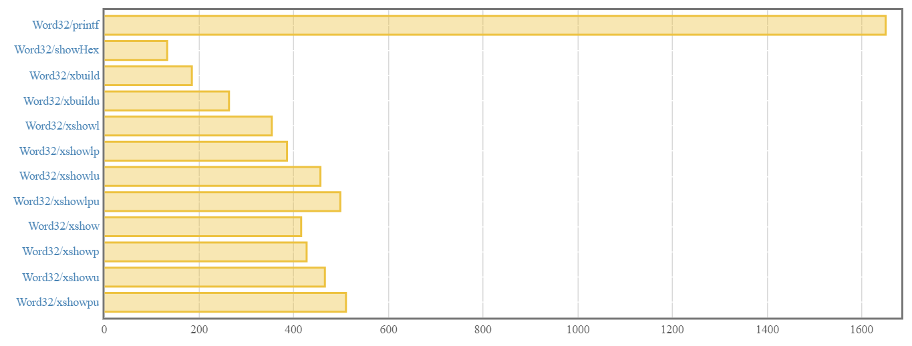

Jason Shipman
August 11, 2017
In the previous post, we overhauled hexy’s API to return Text values instead of String. Our API looked like this:
class HexShow a where
xbuild :: a -> Builder
xbuildu :: a -> Builder
xshow :: HexShow a => a -> Text.Text
xshowp :: HexShow a => a -> Text.Text
xshowu :: HexShow a => a -> Text.Text
xshowpu :: HexShow a => a -> Text.Text
xshowl :: HexShow a => a -> Text.Lazy.Text
xshowlp :: HexShow a => a -> Text.Lazy.Text
xshowlu :: HexShow a => a -> Text.Lazy.Text
xshowlpu :: HexShow a => a -> Text.Lazy.TextAfter this change, the benchmark report’s summary looked like this:

Our initial iteration of using Text instead of String made about half of our functions run significantly slower (i.e. the lowercase ones). I mentioned that using Text instead of String will eventually pay off for the optimization flexibility it gives us, but we are not going to explore that just yet. We will see how we can get a nice performance boost via a GHC language pragma in this post.
There is a great post on School of Haskell describing how typeclasses are desugared. Where we last left off, our HexShow typeclass, the xshow function, and the Word32 instance looked like this:
class HexShow a where
xbuild :: a -> Builder
xbuildu :: a -> Builder
instance HexShow Word32 where
xbuild = xbuildStorable
xbuildu = xbuilduStorable
xshow :: HexShow a => a -> Text.Text
xshow = Text.Lazy.toStrict . xshowlOur typeclass gets desugared into a record:
data HexShowRec a = HexShowRec
{ hexShowRecXBuild :: a -> Builder
, hexShowRecXBuildu :: a -> Builder
}For every instance, GHC creates a dictionary using the HexShowRec record:
word32HexShowInstanceDictionary :: HexShowRec Word32
word32HexShowInstanceDictionary = HexShowRec
{ xbuild = xbuildStorable
, xbuildu = xbuilduStorable
}The compiler replaces the HexShow constraint on xshow with a HexShowRec value as a “method dictionary”:
xshowHexShowRec :: HexShowRec a -> a -> Text.TextWhenever we call xshow, behind the scenes we are calling xshowHexShowRec. GHC implicitly passes the correct method dictionary as the first parameter for us.
If GHC knows at compile-time that type a is Word32 for a given call to xshow, then conceptually, the underlying call to xshowHexShowRec will know it was passed word32HexShowInstanceDictionary specifically.
If GHC does not know what a is at compile-time for a given call to xshow, then the underlying call to xshowHexShowRec will have no knowledge that it was specifically passed the Word32 method dictionary or some other instance’s method dictionary. This makes it difficult for GHC to perform important optimizations like inlining, so calling a function provided by the dictionary is expensive.
Fortunately for us, GHC will probably know what a is based on how our users will likely use the library. For example:
showHexColor :: (Word8, Word8, Word8) -> Text.Text
showHexColor (r, g, b) = mconcat ["#", xshow r, xshow g, xshow b]
-- showHexColor (0, 255, 0) == "#00ff00", i.e. way too greenOn the other hand, our HexShow instances offload all the real work to xbuildStorable and xbuilduStorable in our internal module. Their types:
xbuildStorable :: (Integral a, Show a, Storable a) => a -> Builder
xbuildStorable v = -- ...
xbuilduStorable :: (Integral a, Show a, Storable a) => a -> Builder
xbuilduStorable v = -- ...These functions use typeclass constraints too, meaning that the typeclasses will be desugared to corresponding record values just like we saw with our xshow function. GHC will probably not know the concrete type for a in these functions at compile time, so we will take a performance hit when we use any of the functions from Integral, Show, or Storable.
There are a couple great StackOverflow answers about this typeclass stuff here and here.
SPECIALIZE To The Rescue!GHC offers a language pragma - SPECIALIZE - that in certain circumstances can help us get around the runtime hit of calling typeclass functions. This is an aptly-named extension as it allows us to create “extra [function] versions specialised to particular types”.
Hexy provides instances for the Word-y and Int-y data types, so let’s specialize xbuildStorable and xbuilduStorable for those:
xbuildStorable :: (Integral a, Show a, Storable a) => a -> Builder
{-# SPECIALIZE xbuildStorable :: Int -> Builder #-}
{-# SPECIALIZE xbuildStorable :: Int8 -> Builder #-}
{-# SPECIALIZE xbuildStorable :: Int16 -> Builder #-}
{-# SPECIALIZE xbuildStorable :: Int32 -> Builder #-}
{-# SPECIALIZE xbuildStorable :: Int64 -> Builder #-}
{-# SPECIALIZE xbuildStorable :: Word -> Builder #-}
{-# SPECIALIZE xbuildStorable :: Word8 -> Builder #-}
{-# SPECIALIZE xbuildStorable :: Word16 -> Builder #-}
{-# SPECIALIZE xbuildStorable :: Word32 -> Builder #-}
{-# SPECIALIZE xbuildStorable :: Word64 -> Builder #-}
xbuildStorable v = -- ..
xbuilduStorable :: (Integral a, Show a, Storable a) => a -> Builder
{-# SPECIALIZE xbuilduStorable :: Int -> Builder #-}
{-# SPECIALIZE xbuilduStorable :: Int8 -> Builder #-}
{-# SPECIALIZE xbuilduStorable :: Int16 -> Builder #-}
{-# SPECIALIZE xbuilduStorable :: Int32 -> Builder #-}
{-# SPECIALIZE xbuilduStorable :: Int64 -> Builder #-}
{-# SPECIALIZE xbuilduStorable :: Word -> Builder #-}
{-# SPECIALIZE xbuilduStorable :: Word8 -> Builder #-}
{-# SPECIALIZE xbuilduStorable :: Word16 -> Builder #-}
{-# SPECIALIZE xbuilduStorable :: Word32 -> Builder #-}
{-# SPECIALIZE xbuilduStorable :: Word64 -> Builder #-}
xbuilduStorable v = -- ...To use the SPECIALIZE pragma, we give it an additonal type signature that is less polymorphic than the type signature of the function we are specializing. In our case, less polymorphic means monomorphic - we are using all concrete types in our specializations. This means GHC can know at compile-time specifically which method dictionaries it is working with and can optimize accordingly. We avoid the runtime cost of calling things like Storable.sizeOf.
As we are not diving into the core output in these posts, we will go ahead and add specialized versions for xshow and its variants in the public API. The updates to the code are available on GitHub. We are doing this to rule out the chance of paying the runtime costs here too, even though we have a hunch GHC would likely know which dictionaries to use at compile-time for these functions. When we get to benchmarking below, I encourage you to experiment with removing the specializations on xshow and its variants in the public API. In my testing, any performance differences were negligible.
Writing SPECIALIZE pragmas by-hand is error-prone and tiresome. We can stitch together a quick-and-dirty script to do it for us:
#!/usr/bin/env stack
-- stack script --resolver lts-8.23 --package aeson --package aeson-qq --package stache --package text
{-# LANGUAGE QuasiQuotes #-}
import Data.Aeson (Value)
import Data.Aeson.QQ (aesonQQ)
import qualified Data.Text.Lazy.IO as Text.Lazy.IO
import Text.Mustache (Template, renderMustache)
import Text.Mustache.Compile.TH (mustache)
main :: IO ()
main = Text.Lazy.IO.putStr . renderMustache template $ json
template :: Template
template = [mustache|{{#types}}
{-# SPECIALIZE xbuildStorable :: {{a}} -> Builder #-}
{{/types}}
|]
json :: Value
json = [aesonQQ|{
types: [
{a: "Int"},
{a: "Int8"},
{a: "Int16"},
{a: "Int32"},
{a: "Int64"},
{a: "Word"},
{a: "Word8"},
{a: "Word16"},
{a: "Word32"},
{a: "Word64"}
]
}|]We put the contents above into a file called GimmeSpecializeLines.hs and run it with stack:
$ stack GimmeSpecializeLines.hs
{-# SPECIALIZE xbuildStorable :: Int -> Builder #-}
{-# SPECIALIZE xbuildStorable :: Int8 -> Builder #-}
{-# SPECIALIZE xbuildStorable :: Int16 -> Builder #-}
{-# SPECIALIZE xbuildStorable :: Int32 -> Builder #-}
{-# SPECIALIZE xbuildStorable :: Int64 -> Builder #-}
{-# SPECIALIZE xbuildStorable :: Word -> Builder #-}
{-# SPECIALIZE xbuildStorable :: Word8 -> Builder #-}
{-# SPECIALIZE xbuildStorable :: Word16 -> Builder #-}
{-# SPECIALIZE xbuildStorable :: Word32 -> Builder #-}
{-# SPECIALIZE xbuildStorable :: Word64 -> Builder #-}When we need specialize lines for another function, we update the script’s inline Mustache template. It is refreshing to write an unconfigurable script every now and then!
Our API has not changed so our unit tests do not need to be updated. Feel free to run them to make sure they still pass!
In the previous post, our benchmark results looked like this:
Let’s run the benchmarks again now that we have specialized our functions:
$ stack bench --benchmark-arguments "--output bench.html"View the full report from this run here. The summary looks like this (scales are not the same due to printf):

Whoa… By using the SPECIALIZE pragma to make monomorphic versions of our functions, every function in Hexy’s public API is now faster by at least 100 nanoseconds, and in some cases 150-160 nanoseconds!
In the next post, we will revisit our use of Builder and take a brief dive into strictness.
All code in this post is available on GitHub.